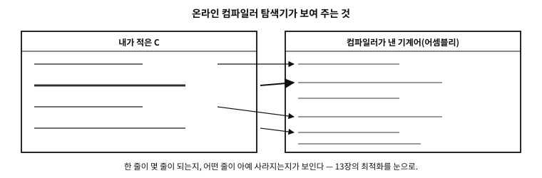
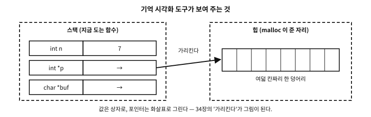

17 개발환경 구축
먼저 알아야 할 것
돌아보기
16장에서 컴파일러에게 -E, -S 같은 부탁을 하며 명령줄에서 일했다. 요즘은 클릭으로 다 되는 세상인데, 왜 명령줄인가?
답. 일반론이기 때문이다. 그래픽 개발 도구는 저마다 생김새가 다르고 몇 해 마다 바뀌지만, cc hello.c -o hello라는 문장은 반세기째 모든 플랫폼에서 통하는 공용어다. 그리고 어떤 그래픽 도구를 쓰든 그 “빌드” 버튼의 밑바닥에서 실제로 도는 것이 바로 이 명령들이다 — 밑바닥을 아는 사람은 도구를 갈아타도 길을 잃지 않는다. 이 책이 명령줄을 기준으로 삼는 이유다.
이 장이 끝나면
이 장에서 답할 질문
- 컴파일러가 두 계열이나 되는 이유가 있는가? 하나만 있으면 헷갈릴 일도 없을 텐데.
- 그러면
-fexec-charset은 언제 쓰는가? - 그러면 예제에서 한글 출력을 아예 피하는 것이 정답인가?
- 그러면
printf디버깅은 이제 그만두어야 하는가? - 경고도 켜고 새니타이저도 있는데, 그래도 버그가 남는 이유는 무엇인가?
17.1 필요한 것은 셋뿐이다
개발환경이라는 말이 거창하지만, C 프로그래밍에 필요한 것은 셋뿐이다.
- 컴파일러 — 16장의 네 주자 일체. 이 책은 gcc와 clang 두 계열을 기준으로 한다(둘 다 무료이고 모든 주요 플랫폼에 있다).
- 텍스트 편집기 — 소스 코드는 그냥 텍스트 파일이므로(8장), 글자를 적을 수 있는 도구면 무엇이든 된다. 어떤 편집기를 쓰는가는 취향의 영역이라 이 책은 정하지 않는다.
- 터미널 — 명령을 적어 넣는 창. 모든 운영체제에 기본으로 있다.
일과의 모양도 단순하다 — 편집하고, 컴파일하고, 실행한다. 이 세 박자 의 반복이 프로그래밍의 기본 사이클이고, 이 책의 모든 예제가 이 사이클 위에서 돈다(물론 독자는 지면으로 읽기만 해도 된다 — 1장의 약속대로, 이 장의 설치조차 시연이지 숙제가 아니다).
플랫폼 노트. Windows에서 컴파일러 설치하기
이 책의 예시 플랫폼은 Windows다. 두 갈래 중 하나(또는 둘 다)를 고르면 된다 — 이 책의 예제는 어느 쪽으로도 동일하게 빌드된다.
갈래 1 — LLVM clang (권장). LLVM 프로젝트의 공식 Windows 배포판을 설치한다. 터미널(PowerShell)에서 한 줄이면 된다:
> winget install LLVM.LLVM(또는 llvm.org 의 릴리스 페이지에서 설치 프로그램을 받아도 같다.) 설치 후 새 터미널에서 clang --version이 판 번호를 답하면 준비 끝 이다. 이후 이 책의 cc 자리에 clang을 쓰면 된다:
> clang hello.c -o hello.exe
> .\hello.exe
안녕, 세상!갈래 2 — MinGW-w64 gcc. gcc의 Windows 이식판이다. MSYS2라는 꾸러미 관리 환경(msys2.org)을 설치한 뒤, 그 터미널에서:
$ pacman -S mingw-w64-ucrt-x86_64-gcc
$ gcc --version셋째 길 — Visual Studio(MSVC)에 관하여. Microsoft의 자체 컴파일러와 통합 환경도 훌륭한 선택지이지만, 이 책의 명령·선택지 표기(gcc/clang 계열)와 달라서 여기서 다루지는 않는다. 관심 있는 독자는 Microsoft의 공식 문서(learn.microsoft.com/cpp)가 설치부터 첫 프로그램까지 자세히 안내하므로 그쪽을 따르면 된다.
문. 컴파일러가 두 계열이나 되는 이유가 있는가? 하나만 있으면 헷갈릴 일도 없을 텐데.
답. 경쟁이 곧 품질이기 때문이다 — 그리고 프로그래머에게는 공짜 검증 도구이기 때문이다. 같은 코드를 gcc와 clang 양쪽으로 컴파일해 보면, 한쪽이 놓친 경고를 다른 쪽이 잡아 주는 일이 흔하다. 두 독립적인 구현이 모두 통과시키는 코드는 표준(계약서)에 맞게 쓰였을 가능성이 훨씬 높다 — 12장의 표현을 빌리면, 방언이 아니라 표준어로 말하고 있다는 교차 증거다. 실제로 이 책의 수록 예제들도 두 컴파일러로 교차 검증한다.
17.2 설치가 부담이면 — 웹에서 바로 해 보기
앞 절의 셋을 갖추는 것이 정석이지만, 지금 당장 한 줄 돌려 보고 싶을 때는 브라우저만으로도 된다. 설치 없이 컴파일하고 실행해 주는 자리가 여럿 있고, 그중 몇은 이 책이 지면으로만 보여 준 것 — 최적화된 기계어, 포인터가 가리키는 자리 — 을 눈으로 보여 준다.
| 무엇 | 성격 | 이 책에서 쓸모 있는 자리 |
|---|---|---|
Compiler Explorer(godbolt.org) | 소스와 어셈블리를 나란히 보여 준다. C 컴파일러 판본이 천 개가 넘는다 | 13장 최적화, 16장 컴파일 과정, 48장 연산자 |
| OnlineGDB | 편집·실행에 디버거까지 브라우저에서 | 이 장의 디버거 절을 설치 없이 따라가기 |
| Wandbox·Coliru | 여러 컴파일러 판으로 같은 코드를 돌려 본다 | 「내 컴파일러에서만 되는 것」 가려내기 |
| Replit | 파일 여럿과 터미널이 있는 작업 공간 | 여러 파일 예제(53장) |
| Python Tutor(C 모드) | 실행을 한 줄씩 세우고 기억을 그림으로 | 35장~44장 포인터와 기억 |
cdecl.org | 복잡한 선언을 사람 말로 풀어 준다 | 59장 선언 읽기 |
표 17.1

그림 17.1 — 소스 한 줄이 기계어 몇 줄이 되는지 나란히 보여 주는 화면 얼개.
17.2.1 학습용 옵션 — 웹에서도 그대로
어느 도구를 쓰든 옵션 칸을 비워 두지 않는 것이 요령이다. 다음 절에서 볼 경고 옵션이 여기서도 그대로 통한다.
-std=c23 -Wall -Wextra -Werror -g -O0
-fsanitize=address,undefined ← 지원하는 사이트에서만- Compiler Explorer 는 컴파일러 이름 옆의 Compiler options 칸에 그대로 적는다.
- OnlineGDB 는 설정(톱니바퀴)의 Extra Compiler Flags 칸에 적는다.
- 사이트가 낡은 컴파일러를 기본값으로 주는 일이 흔하다.
-std=c23이 거부되면 그 컴파일러가 오래된 것이니 목록에서 새 판을 고른다(-std=c2x가 통하는 중간 세대도 있다).

그림 17.2 — 값은 상자로, 포인터는 화살표로 — 시각화 도구가 그려 주는 그림.
기억 시각화는 특히 제7부(포인터와 기억)를 읽을 때 값이 크다. 이 책이 그림과 말로 설명한 「가리킨다」를, 자기가 적은 코드에서 직접 움직여 볼 수 있기 때문이다.
플랫폼 노트. 온라인 도구의 한계 — 알고 쓰면 편하다
브라우저의 자리는 편한 만큼 좁다. 미리 알아 두면 헛수고를 던다.
- 시간과 기억에 제한이 있다. 오래 도는 루프나 큰 배열은 중간에 끊긴다.
- 파일과 네트워크가 대개 막혀 있다. 파일 입출력 예제(62장 이후)는 자기 기계에서 돌리는 편이 낫다.
- 표준 입력은 미리 적어 두는 칸에 넣는다. 대화형 입력은 흉내만 낸다.
- 남의 서버다. 회사 코드나 공개하면 안 되는 것을 붙여 넣지 않는다. Compiler Explorer 의 공유 링크는 그 코드를 URL 로 남긴다.
- 사이트마다 컴파일러 판과 라이브러리가 다르다. 「여기서는 되는데 저기서는 안 된다」의 절반은 판 차이다(16장).
그래서 이 책의 권고는 이렇다 — 배우는 동안에는 웹으로 빠르게, 무언가를 만들기 시작하면 자기 기계에. 앞 절의 셋을 갖추는 일은 미룰 수는 있어도 건너뛸 수는 없다.
연습 문제를 주는 곳, 무료로 읽을 수 있는 자료, 그리고 오래된 자료를 가려내는 요령까지 부록 D에 모아 두었다. 이 책이 연습을 두지 않았으므로(머리말), 손으로 익히는 일은 그 부록의 자리에서 이어 가면 된다.
17.3 경고 — 공짜 검토를 켜 두어라
설치 직후에 들일 습관이 하나 있다. 컴파일러에게 경고를 넉넉히 켜 달라고 부탁하는 것이다:
$ cc -Wall -Wextra hello.c -o hello-Wall -Wextra는 “수상한 구석을 최대한 알려 달라”는 뜻이다(이름과 달리 -Wall이 전부는 아니라서 관행상 둘을 함께 쓴다). 경고는 오류가 아니라 컴파일러의 무료 코드 검토다 — 계약(표준) 위반까지는 아니어도 사고 나기 좋은 무늬를 짚어 준다. 이 책의 모든 예제는 이 두 선택지를 켠 채, 경고 0개로 검증된다.
17.4 한글이 깨질 때 — 인코딩의 사슬
여기서 한국어권 독자가 거의 반드시 겪는 문제를 미리 짚어 둔다. 이 책의 예제가 출력 문자열을 대부분 영어로 쓰는 것도 이 사정 때문이다 — 한글을 찍는 순간, 프로그램 하나가 아니라 네 겹의 인코딩 설정이 전부 맞아야 글자가 제대로 나온다.
사슬의 네 고리는 이렇다.
- ① 소스 파일의 인코딩 — 소스는 결국 바이트 열이다(9장). 편집기가 UTF-8로 저장했는지, 아니면 옛 한국어 윈도우의 기본이던 CP949(EUC-KR 계열)로 저장했는지에 따라 같은 “안녕”이 다른 바이트가 된다.
- ② 컴파일러가 읽는 인코딩 — 컴파일러는 소스가 어떤 인코딩인지 추측하거나 기본값을 가정한다. 소스는 UTF-8인데 컴파일러가 CP949로 읽으면, 문자열 리터럴의 바이트가 그 자리에서 어그러진다.
- ③ 실행 문자 집합 — 컴파일러가 실행 파일에 심는 바이트가 무엇인가 (9장의 5단계, 56장의 번역 단계에서 본 그 변환이다).
- ④ 터미널이 해석하는 인코딩 — 프로그램이 뱉은 바이트를 창이 어떤 표로 읽는가. 여기가 어긋나면 앞의 셋이 완벽해도 화면에는 깨진 글자가 뜬다.
네 고리 중 하나만 어긋나도 증상은 똑같이 “글자가 깨진다”로 나타나므로, 초보자가 원인을 짚기가 유난히 어렵다. 진단의 요령은 어느 고리에서 깨졌는지 좁히는 것이다 — 소스를 16진으로 열어 보면(①②를 가름), 파일로 출력을 돌려 보면(④를 가름) 범인이 드러난다.
17.4.1 ②와 ③을 컴파일러에 못박는 법
9장에서 본 대로 C는 소스 문자 집합과 실행 문자 집합을 다른 것으로 취급하고, 둘 다 구현이 정한다. 그 「구현이 정하는 것」을 사람이 명시하는 옵션이 있다.
| 무엇을 정하는가 | GCC·Clang | MSVC |
|---|---|---|
| ② 컴파일러가 소스를 읽을 인코딩 | -finput-charset=… | /source-charset:… |
| ③ 실행 문자 집합(리터럴 인코딩) | -fexec-charset=… | /execution-charset:… |
| ③ 와이드 리터럴 인코딩 | -fwide-exec-charset=… | (별도 옵션 없음) |
| ②③을 한꺼번에 UTF-8로 | 기본값이 이미 UTF-8 | /utf-8 |
표 17.2
기본값을 알아 두면 사고가 줄어든다. GCC·Clang 은 양쪽 다 UTF-8이 기본이고, MSVC 는 현재 시스템 코드 페이지를 기본으로 삼는다(한국어 Windows 라면 CP949). /utf-8 한 줄이 Windows 쪽 사고의 절반을 없애는 이유가 이것이다.
examples/ch17/charset.c
/* 리터럴이 실제로 어떤 바이트·값이 되는가 — 층을 갈라서 본다.
같은 소스라도 컴파일 옵션에 따라 첫 줄이 달라진다(본문의 실측 표). */
#include <stdio.h>
#include <stddef.h>
#include <string.h>
#include <uchar.h>
static void dump(const char *tag, const char *p, size_t n)
{
printf(" %-28s", tag);
for (size_t i = 0; i < n; i++) printf(" %02X", (unsigned char)p[i]);
puts("");
}
int main(void)
{
const char *plain = "가"; /* 리터럴 인코딩 — 구현이 정한다 */
const char8_t *utf8 = u8"가"; /* 언제나 UTF-8 — 표준이 못박는다 */
puts("[문자열 리터럴의 바이트]");
dump("\"가\" (리터럴 인코딩)", plain, strlen(plain));
dump("u8\"가\" (항상 UTF-8)", (const char *)utf8, strlen((const char *)utf8));
puts("\n[넓은 문자 리터럴의 코드 단위]");
printf(" u\"가\"[0] = U+%04X (char16_t, UTF-16)\n", (unsigned)u"가"[0]);
printf(" U\"가\"[0] = U+%04X (char32_t, UTF-32)\n", (unsigned)U"가"[0]);
printf(" L\"가\"[0] = U+%04X (wchar_t, %zu바이트)\n",
(unsigned)L"가"[0], sizeof(wchar_t));
puts("\n[구현이 무엇을 보장한다고 말하는가]");
#ifdef __STDC_ISO_10646__
printf(" __STDC_ISO_10646__ = %ldL → wchar_t 가 유니코드다\n",
(long)__STDC_ISO_10646__);
#else
puts(" __STDC_ISO_10646__ 정의 안 됨 → wchar_t 인코딩은 구현 정의");
#endif
#ifdef __STDC_UTF_16__
printf(" __STDC_UTF_16__ = %d → char16_t 가 UTF-16\n", __STDC_UTF_16__);
#endif
#ifdef __STDC_UTF_32__
printf(" __STDC_UTF_32__ = %d → char32_t 가 UTF-32\n", __STDC_UTF_32__);
#endif
puts("\n[기본 문자 집합은 흔들리지 않는다]");
printf(" 'A' = %d, '0' = %d, sizeof \"A\" = %zu\n", 'A', '0', sizeof "A");
return 0;
}
실행 결과
[문자열 리터럴의 바이트]
"가" (리터럴 인코딩) EA B0 80
u8"가" (항상 UTF-8) EA B0 80
[넓은 문자 리터럴의 코드 단위]
u"가"[0] = U+AC00 (char16_t, UTF-16)
U"가"[0] = U+AC00 (char32_t, UTF-32)
L"가"[0] = U+AC00 (wchar_t, 4바이트)
[구현이 무엇을 보장한다고 말하는가]
__STDC_ISO_10646__ = 201706L → wchar_t 가 유니코드다
__STDC_UTF_16__ = 1 → char16_t 가 UTF-16
__STDC_UTF_32__ = 1 → char32_t 가 UTF-32
[기본 문자 집합은 흔들리지 않는다]
'A' = 65, '0' = 48, sizeof "A" = 2
시연은 기본 설정에서 돌린 결과다. 같은 소스를 옵션만 바꿔 다시 빌드하면 첫 줄이 달라진다 — 실측하면 이렇다.
| 소스 파일 인코딩 | -finput-charset | -fexec-charset | "가" 의 바이트 |
|---|---|---|---|
| UTF-8 | (기본 UTF-8) | (기본 UTF-8) | EA B0 80 |
| UTF-8 | (기본) | EUC-KR | B0 A1 |
| EUC-KR | EUC-KR | (기본 UTF-8) | EA B0 80 |
| EUC-KR | 지정하지 않음 | (기본) | B0 A1 — 바이트가 그냥 통과했다 |
표 17.3
두 가지를 읽어 낸다.
첫째, 같은 소스 파일이 다른 프로그램이 된다. 셋째 줄과 넷째 줄은 바이트가 똑같은 파일인데 결과가 다르다. 컴파일러에게 「이 파일은 EUC-KR 이다」라고 말해 주었느냐가 갈랐다.
둘째, 틀리게 말해도 대개 오류가 나지 않는다. 넷째 줄에서 컴파일러는 UTF-8 이라 믿고 읽었지만 아무 말 없이 통과시켰고, 바이트를 그대로 실행 파일에 실었다. 우연히 화면이 멀쩡해 보일 수도 있다 — 터미널이 CP949 라면. 네 고리가 다 어긋난 채로 결과만 맞아 보이는 상태가 가장 고약한데, 기계나 사람이 하나만 바뀌면 그때 깨진다.
문. 그러면 -fexec-charset 은 언제 쓰는가?
답. 거의 쓰지 않는 것이 답이다. 오늘 새로 짓는 프로그램의 정답은 전부 UTF-8로 통일이고, 그러면 이 옵션들이 필요 없다(GCC·Clang 의 기본값이 이미 그것이다).
쓰게 되는 자리는 둘뿐이다. 옛 코드를 되살릴 때 — 소스가 CP949 로 저장된 옛 프로젝트를 손대지 않고 빌드해야 할 때 -finput-charset=CP949 로 컴파일러에게 사실을 알려 준다. 그리고 바꿀 수 없는 상대가 있을 때 — 출력을 EUC-KR 로만 받는 옛 장비나 프로그램에 넘겨야 한다면 실행 문자 집합을 맞춘다.
둘 다 예외를 선언하는 자리이므로 12장의 사다리대로 빌드 파일에 이유를 적어 둔다. 옵션 하나가 프로그램의 바이트를 통째로 바꾸는데, 그것이 어디에도 적혀 있지 않으면 다음 사람이 원인을 찾는 데 하루가 든다.
그리고 바이트가 흔들리면 안 되는 자리에는 애초에 u8"…"를 쓴다(9장) — 옵션과 무관하게 UTF-8 임을 표준이 보장한다. 실제로 시연에서 -fexec-charset=EUC-KR 로 빌드해도 u8"가" 만은 EA B0 80 그대로였다.
실제 사례. __STDC_ISO_10646__ 이 참말만 하지는 않는다
표준은 이 매크로에 대해 「다른 인코딩을 쓴다면 매크로를 정의하지 않아야 한다」고 적는다(§6.10.10.3). 그런데 -fwide-exec-charset=EUC-KR 로 와이드 리터럴 인코딩을 유니코드가 아닌 것으로 바꿔 빌드해 보면 — L"가"[0] 이 U+A1B0(EUC-KR 바이트)이 되는데도 __STDC_ISO_10646__ 은 여전히 201706L 로 정의되어 있었다.
교훈은 매크로를 믿지 말라는 것이 아니라, 기능 검사 매크로는 「구현이 그렇다고 말한 것」이지 「지금 이 빌드 설정에서 참인 것」이 아닐 수 있다는 것이다. 특히 기본값에서 벗어난 옵션을 준 빌드에서 그렇다. 12장의 사다리로 말하면, 이런 자리는 매크로 하나에 기대지 말고 시험으로 확인해 둘 자리다.
플랫폼 노트. Windows에서 한글이 깨질 때
Windows가 이 문제의 최대 격전지다. 오랫동안 한국어 Windows의 기본 코드 페이지가 CP949였고, 그 위에 UTF-8 세계가 얹히면서 고리마다 설정이 갈렸기 때문이다. 실전 처방을 도구별로 적어 둔다.
공통 — 소스는 UTF-8로. 편집기에서 “UTF-8”로 저장한다. 다만 Windows 도구들과의 호환을 위해 BOM이 붙은 UTF-8(UTF-8 with signature)을 권하는 경우가 있다 — MSVC는 BOM이 있으면 UTF-8임을 확신하고 읽는다. gcc·clang은 BOM 없는 UTF-8을 기본으로 잘 읽는다.
Visual Studio(MSVC) — 파일을 “인코딩을 지정하여 저장”으로 UTF-8(BOM 포함)로 두거나, 컴파일 옵션 /utf-8을 주어 소스와 실행 문자 집합을 모두 UTF-8로 못박는 것이 가장 확실하다. 자세한 안내는 Microsoft 공식 문서에 있다.
VS Code — 오른쪽 아래 상태 표시줄에 현재 파일의 인코딩이 뜬다. 거기서 “Save with Encoding → UTF-8”로 바꾸고, 설정에서 "files.encoding": "utf8"을 기본으로 두면 ①이 고정된다. 자동 감지 (files.autoGuessEncoding)는 편해 보이지만 추측이 틀리면 오히려 파일을 망칠 수 있으니, 팀 작업에서는 끄고 명시하는 쪽이 안전하다.
터미널(④) — Windows 콘솔은 현재 코드 페이지로 바이트를 해석한다. chcp 65001로 UTF-8 코드 페이지로 바꾸면 UTF-8 출력이 제대로 보인다. Windows Terminal은 UTF-8을 기본에 가깝게 다루므로 옛 콘솔 창보다 사고가 적다. 반대로 CP949로 맞춰 둔 콘솔에서 UTF-8 프로그램을 돌리면 자모가 깨져 보이는데 — 프로그램이 틀린 것이 아니라 읽는 표가 다른 것이다 (9장의 그 이야기가 화면에서 재현되는 것이다).
MinGW·MSYS2 / WSL — 이쪽은 대개 UTF-8이 기본이라 사고가 적다. 다만 MinGW로 만든 프로그램을 옛 Windows 콘솔에서 돌리면 ④가 어긋날 수 있다는 것은 같다.
문. 그러면 예제에서 한글 출력을 아예 피하는 것이 정답인가?
답. 학습 단계에서는 그렇게 하는 편이 이롭다 — 이 책의 예제가 그런 선택을 했다. 배우려는 것이 포인터인데 인코딩 설정 때문에 막히면, 정작 배울 것에서 멀어지기 때문이다. 다만 피하는 것이 해결은 아니다. 실무의 프로그램은 결국 한글을 다루게 되고, 그때는 이 사슬을 하나씩 고정하는 것이 정공법이다 — 소스 UTF-8, 컴파일러에 UTF-8 명시, 터미널 UTF-8. 세 곳을 못박아 두면 그 뒤로는 조용하다. 문자열을 다루는 쪽의 규칙 (글자 수 ≠ 바이트 수, 경계에서 자르지 않기)은 9장과 41장에서 이미 배운 그대로다.
17.5 디버거 — 멈춰 세워 들여다보기
프로그램이 틀린 답을 낼 때 가장 먼저 하는 일은 대개 printf를 심는 것이다. 나쁜 방법이 아니다 — 어디서나 되고, 준비가 필요 없다. 다만 찍을 자리를 미리 알아야 하고, 한 번 찍을 때마다 다시 컴파일해야 하며, 찍히는 것은 그 순간 그 변수뿐이다.
디버거(debugger)는 그 제약을 걷어낸다. 프로그램을 원하는 지점에서 멈춰 세우고, 그 순간의 모든 변수를 들여다보고, 한 줄씩 걸어 보고, 어떻게 여기까지 왔는지 호출의 사슬을 되짚는다. 표준 도구는 GNU의 gdb와 LLVM의 lldb이고, 명령 이름만 다를 뿐 하는 일은 같다.
| 하고 싶은 일 | gdb 명령 | 뜻 |
|---|---|---|
| 여기서 멈춰라 | break sum_all | 중단점(breakpoint) |
| 시작 | run | 프로그램 실행 |
| 이 값이 뭐지 | print n | 변수·수식 평가 |
| 한 줄 진행 | next / step | 건너뛰기 / 함수 안으로 |
| 여기까지 어떻게 왔나 | backtrace | 호출 사슬(call stack) |
| 이 변수가 바뀌면 멈춰라 | watch s | 감시점(watchpoint) |
| 함수 끝날 때까지 | finish | 반환값까지 보여 준다 |
표 17.4
예제로 쓸 프로그램은 이렇다. 합이 150이어야 하는데 100이 나온다.
examples/ch17/bug.c
#include <stdio.h>
static int sum_all(const int *a, int n) {
int s = 0;
for (int i = 0; i < n - 1; i++) /* bug: stops one short */
s += a[i];
return s;
}
int main(void) {
int data[5] = {10, 20, 30, 40, 50};
printf("sum = %d (should be 150)\n", sum_all(data, 5));
return 0;
}
실행 결과
sum = 100 (should be 150)
디버거로 붙잡으면 이렇게 보인다(gdb 17.2로 실제 실행한 것이다).
$ gcc -std=c23 -g -O0 bug.c -o bug
$ gdb -q ./bug
(gdb) break sum_all
Breakpoint 1 at 0x1154: file bug.c, line 4.
(gdb) run
Breakpoint 1, sum_all (a=0x7fff5302c8a0, n=5) at bug.c:4
4 int s = 0;
(gdb) print n
$1 = 5
(gdb) next
5 for (int i = 0; i < n - 1; i++) /* bug: stops one short */
(gdb) next
6 s += a[i];
(gdb) print a[4]
$3 = 50
(gdb) finish
Run till exit from sum_all (a=..., n=5) at bug.c:4
Value returned is $4 = 100n은 5로 제대로 들어왔고, 배열의 마지막 칸 a[4]에는 50이 멀쩡히 있는데 반환값은 100이다. 재료는 옳고 계산이 틀렸다는 뜻이므로 남은 곳은 루프의 경계뿐이다 — i < n - 1. 이 좁혀 가는 과정 자체가 디버거의 쓸모다.
17.6 디버그 빌드의 옵션 — -g와 -O0은 다른 스위치다
디버거가 변수 이름과 줄 번호를 알려면 컴파일러가 그 정보를 실행 파일에 넣어 두어야 한다. 그것이 -g다.
-g— 디버그 정보(debug info)를 넣는다. 변수 이름, 타입, 줄 번호, 함수의 경계가 실행 파일 안에 함께 실린다.-O0— 최적화를 끈다. 소스의 문장과 기계 명령이 거의 일대일로 대응 하므로, 한 줄씩 걷기와 변수 보기가 정확하게 동작한다.-Og— “디버깅하기 좋을 만큼만” 최적화한다.-O0보다 빠르면서-O2보다 훨씬 잘 보인다. 디버깅용 기본값으로 좋다.-g3— 매크로 정의까지 넣는다.print MAX_LEN같은 것이 된다.-fno-omit-frame-pointer— 호출 사슬을 되짚는 실마리를 남긴다. 프로파일러와 크래시 보고에도 도움이 된다.
assert(50장)와 관련한 스위치도 하나 있다. -DNDEBUG를 주면 모든 assert가 통째로 사라진다 — 릴리스 빌드가 대개 그렇게 만들어진다. 검사를 지운다는 것은 디버그 빌드에서 걸리던 것이 릴리스에서는 그냥 지나간다는 뜻이므로, 사라져서는 안 되는 검사는 assert가 아니라 보통 if로 써야 한다.
흔한 오해. “-g를 붙이면 프로그램이 느려진다”
-g는 정보를 덧붙일 뿐 생성되는 기계 명령을 바꾸지 않는다 — 실행 파일이 커질 뿐 속도는 같다. 느려지는 원인은 함께 쓰는 -O0이다. 둘은 서로 다른 스위치이고, -O2 -g처럼 함께 쓸 수 있다. 실무에서는 릴리스 빌드도 -g로 만들어 디버그 정보를 별도 파일로 떼어 보관하는 것이 정석이다 — 출하하는 실행 파일은 가볍게 유지하면서, 현장에서 온 크래시 보고를 그 정보로 해독할 수 있기 때문이다. 정보를 버리면 그 순간부터 사고 현장은 주소 숫자의 나열이 된다.17.7 디버거의 맹점 — 최적화된 빌드
문제는 릴리스 빌드다. 앞의 같은 프로그램을 -O2 -g로 만들어 붙잡으면 이렇게 된다(역시 실제 캡처다).
$ gcc -std=c23 -g -O2 bug.c -o bug
$ gdb -q ./bug
(gdb) break sum_all
Function "sum_all" not defined.
(gdb) break main
Breakpoint 1 at 0x1040: file bug.c, line 12.
(gdb) run
Breakpoint 1, main () at bug.c:12
12 printf("sum = %d (should be 150)\n", sum_all(data, 5));
(gdb) info locals
data = <optimized out>찾던 함수가 없다. 컴파일러가 sum_all을 호출 자리에 펼쳐 넣고 (인라인), 상수 배열의 합을 아예 컴파일 시간에 계산해 버려서, 실행 파일 안에 그런 함수가 남아 있지 않기 때문이다. 배열 data도 마찬가지로 “최적화되어 사라졌다”. 13장에서 배운 편집자의 권리가, 여기서는 관찰자의 시야를 가리는 형태로 나타난 것이다.
최적화 빌드에서 흔히 만나는 맹점을 모으면 이렇다.
<optimized out>— 변수가 레지스터에만 있거나 아예 없어져 값을 볼 수 없다(11장의 레지스터가 여기서 되돌아온다).- 줄 번호가 튄다 — 한 줄씩 걸으면 12 → 15 → 12처럼 오간다. 컴파일러가 명령을 재배열했기 때문이고, 디버거는 거짓말을 하는 것이 아니라 뒤섞인 실제 순서를 보여 주는 것이다.
- 호출 사슬이 짧다 — 인라인된 함수와 꼬리 호출(tail call)은 스택에 프레임을 남기지 않는다.
- 중단점이 걸리지 않는다 — 지워진 코드에는 멈출 자리가 없다.
17.8 디버그에선 되는데 릴리스에서만 틀린다
가장 곤혹스러운 상황이고, 원인의 대부분은 하나로 모인다 — 프로그램은 이미 깨져 있었고, 디버그 빌드가 우연히 그것을 가려 주고 있었다. 최적화가 멀쩡한 코드를 망가뜨린 것이 아니라, 계약 밖의 코드(13장·51장)가 전제로 쓰이면서 비로소 증상이 드러난 것이다. 흔한 뿌리는 다음과 같다.
- 초기화하지 않은 지역 변수 —
-O0에서는 스택의 그 자리가 마침 0이라 잘 돌다가, 배치가 바뀌면 쓰레기 값이 들어온다. - 경계를 넘는 쓰기 — 넘어간 자리에 무엇이 놓였느냐가 빌드마다 다르다. 디버그 빌드에서는 여유 공간을 덮고 지나가던 것이, 릴리스에서는 하필 중요한 값을 덮는다.
- 계약 밖을 전제로 삼는 최적화 — 부호 있는 오버플로는 없다(7장), 엄격한 앨리어싱(13장)은 지켜진다, 널을 역참조한 뒤라면 널일 리 없다 — 이런 전제는
-O2에서만 실제 코드 변형으로 나타난다. volatile을 빠뜨린 폴링 루프 — 13장에서 본 그대로,-O0에서는 매번 읽던 것이-O2에서 한 번만 읽히고 굳는다.- 사라진
assert—-DNDEBUG로 검사가 통째로 빠지면서 잘못된 입력이 그대로 흘러 들어간다. - 타이밍이 바뀌며 드러나는 경쟁 — 여러 갈래로 도는 프로그램(12장)에서 빨라진 코드가 순서를 바꾸어 놓는다. 디버거를 붙이면 느려져서 증상이 사라지는, 이른바 하이젠버그(Heisenbug)의 전형이다.
- 실수 계산의 미세한 차이 —
-ffast-math류의 선택지는 결합 법칙을 가정해 순서를 바꾸므로 마지막 자리가 달라질 수 있다(8장).
실제 사례. “우리 코드는 디버그에서 잘 됩니다” — 커널이 플래그로 항복한 이야기
13장에서 본 엄격한 앨리어싱은 이 부류의 대표다. 손으로 짠 파서가 바이트 버퍼를 폭이 다른 포인터로 들여다보는 코드는-O0에서 완벽하게 돌고, -O2에서 조용히 다른 답을 낸다. 리눅스 커널은 이 문제를 코드로 일일이 고치는 대신 빌드 전체를 -fno-strict-aliasing으로 컴파일하는 길을 택했다 — 규칙 하나 때문에 플래그 하나를 통째로 끈 것이다. 개인 프로젝트에서 흉내 낼 일은 아니지만, “릴리스에서만 나는 버그”가 얼마나 현실적인 문제인지를 보여 주는 가장 유명한 사례다.17.9 디버거를 믿기 어려울 때의 도구들
디버거를 못 쓰거나 믿기 어려운 자리는 실제로 있다 — 최적화 빌드에서만 재현되는 버그, 붙이는 순간 사라지는 타이밍 버그, 디버거를 띄울 수 없는 운영 환경, 그리고 화면도 키보드도 없는 임베디드 보드. 그럴 때의 순서는 대략 이렇다.
-Og -g로 다시 세워 본다. 최적화를 완전히 끄지 않으면서 시야를 되찾는 첫 시도다. 여기서 증상이 남아 있다면 디버거가 다시 쓸 만해진다.- 새니타이저를 켠다. 다음 절의 도구들이다. 이들은 사고를 일어나는 순간에 잡으므로, 최적화 빌드에서만 나는 버그의 원인을 대개 여기서 찾는다. 릴리스와 같은
-O2에 얹어 쓸 수 있다는 점이 중요하다. - 가설을 플래그로 검증한다.
-fno-strict-aliasing을 켜서 증상이 사라지면 원인이 앨리어싱 쪽임을 알 수 있다. 다만 이것은 진단이지 치료가 아니다 — 원인을 확인했으면 코드를 고친다. - 경고와 정적 분석을 최대로 올린다.
-Wall -Wextra에 더해-fanalyzer(GCC)나clang --analyze는 실행 없이 잡아낸다. - 로그와 코어 덤프를 남긴다. 운영 환경에서는 이것이 유일한 창이다. 릴리스 빌드에
-g를 넣어 두었다면(앞의 오개념 상자) 사후에 그 덤프를 디버거로 열어 사고 지점을 소스 줄로 되짚을 수 있다. - 이분 탐색으로 좁힌다. 최적화 단계를 낮춰 가며(
-O2→-O1→-O0) 어디서 갈리는지 보고, 버전 관리의 이력을 반으로 갈라 가며 언제 들어온 버그인지 찾는다(94장의git bisect). - 최소 재현을 만든다. 문제를 재현하는 가장 작은 프로그램으로 줄이면 원인이 저절로 드러나는 일이 많고, 남에게 물어볼 수 있는 형태가 된다.
플랫폼 노트. 디버거 설치와 Windows 사정
Linux·macOS — gdb는 배포판의 패키지 관리자로, lldb는 LLVM 패키지에 함께 온다. macOS는 lldb가 기본이다.
Windows(MSYS2·MinGW) — pacman -S mingw-w64-ucrt-x86_64-gdb로 받는다. MinGW로 만든 실행 파일은 이 gdb로 붙잡는다.
Windows(LLVM) — lldb가 함께 설치된다. 다만 MSVC 계열이 쓰는 PDB 형식의 디버그 정보와의 궁합은 도구 조합에 따라 달라진다.
Visual Studio — 통합 디버거의 완성도가 매우 높고, 조사식·메모리 창· 시간 여행 디버깅(Time Travel Debugging, WinDbg)까지 갖추고 있다. 명령을 외울 필요 없이 F5·F10·F11로 앞의 표와 같은 일을 한다.
어느 쪽이든 개념은 같다 — 중단점, 한 줄 진행, 변수 보기, 호출 사슬. 도구가 바뀌어도 이 넷을 찾으면 된다.
문. 그러면 printf 디버깅은 이제 그만두어야 하는가?
답. 아니다. 둘은 경쟁 관계가 아니라 쓰는 자리가 다르다. 디버거는 한 순간을 깊게 보는 도구이고, 로그는 긴 시간을 넓게 보는 도구다. 타이밍 문제, 오래 도는 서버, 임베디드, 재현이 어려운 사고에서는 로그가 유일한 창인 경우가 많다. 실무의 요령은 임시로 심었다 지우는 printf 대신 켜고 끌 수 있는 로그를 처음부터 코드에 두는 것이다 — 그러면 같은 창을 개발 중에도, 운영 중에도 쓸 수 있다.
17.10 새니타이저 — 실행 중에 치는 그물
현대 C 개발환경의 필수 장비가 하나 더 있다. 컴파일 때가 아니라 실행 중에 사고를 잡는 도구, 새니타이저(sanitizer)다.
원리는 이렇다 — 컴파일할 때 특별한 선택지를 주면, 컴파일러가 프로그램 곳곳에 감시 코드를 심어 준다. 그 프로그램을 실행하면 감시 코드가 메모리 접근과 연산을 지켜보다가, 잘못이 일어나는 순간 현장을 짚으며 프로그램을 세운다. 대표 선수는 셋이다.
- ASan(AddressSanitizer) — 메모리 사고 담당. 경계를 넘는 접근, 해제 한 기억을 다시 만지기 같은, 제7부에서 만날 위험들을 현장에서 잡는다.
- UBSan(UndefinedBehaviorSanitizer) — 계약 위반 담당. 부호 있는 오버플로(7장), 폭 이상 시프트(7장) 같은 정의되지 않은 동작이 실행 중에 실제로 일어나면 그 자리에서 알린다. 51장의 주역이다.
- TSan(ThreadSanitizer) — 경쟁 사고 담당. 여러 코어(12장)가 같은 데이터를 다투는 문제를 잡는다. 이 책의 범위 밖이지만 이름은 알아 둔다.
쓰는 법은 컴파일 선택지 하나다:
$ cc -fsanitize=address,undefined -g hello.c -o hello
$ ./hello(-g는 “사고 지점을 소스 몇 번째 줄인지로 알려 달라”는 부가 정보 선택지다.) 이렇게 빌드한 프로그램은 조금 느려지는 대신, 사고를 조용히 지나치지 않는다 — 7장에서 본 “오버플로는 조용하다”에 대한 현대의 응답이 바로 이 도구들이다. 이 책의 뒷부분(제7부, 제9부)에서 위험한 코드를 다룰 때, 새니타이저가 사고를 잡아내는 장면을 지면에서 여러 번 보게 된다.
플랫폼 노트. Windows에서 새니타이저 쓰기
플랫폼마다 지원 폭이 달라서, Windows의 사정을 정직하게 적어 둔다.
- ASan·UBSan: 갈래 1의 clang으로 쓸 수 있다 — 위의
-fsanitize=address,undefined선택지가 그대로 통한다. 갈래 2의 MinGW-w64 gcc는 Windows에서 새니타이저를 지원하지 않는다 — 새니타이저를 쓰려면 clang을 고르면 된다(두 갈래를 다 설치해 두고 평소엔 아무 쪽, 검사할 땐 clang을 쓰는 것도 좋은 배치다). - TSan: Windows 자체를 지원하지 않는다(리눅스·macOS 전용). Windows 에서 굳이 쓰려면 WSL(Windows 안의 리눅스 환경, Microsoft 공식 기능)을 통하는 길이 있다 — 다만 이 책의 범위에서는 필요하지 않다.
참고로 MSVC도 자체 ASan을 지원한다(/fsanitize=address) — 상세는 앞서 언급한 Microsoft 공식 문서에 있다.
문. 경고도 켜고 새니타이저도 있는데, 그래도 버그가 남는 이유는 무엇인가?
답. 각 도구가 보는 범위가 다르기 때문이다. 경고는 컴파일 시점에 코드의 생김새를 보고, 새니타이저는 실행 시점에 실제로 일어난 일을 본다 — 즉 실행해 보지 않은 경로의 사고는 새니타이저도 모른다. 그래서 현대적 C 개발은 그물을 겹친다: 경고(항상) + 새니타이저(시험 실행) + 두 컴파일러 교차(습관) + 그리고 애초에 사고 나기 어려운 부품을 쓰는 것. 마지막 항목이 42장에서 세울 규율의 자리다 — 도구는 그물이고, 좋은 부품은 애초에 떨어지지 않는 발판이다.
17.11 제3부를 닫으며
첫 프로그램을 읽었고(15장), 그것이 실행 파일이 되는 릴레이를 구경했으며(16장), 그 릴레이를 내 책상에서 돌릴 도구와 그물까지 갖췄다(17장). 이제 준비는 끝났다.
다음 두 장은 이 부의 마무리이자 지도다. 우리가 방금 깐 gcc·clang 말고 세상에 어떤 C 컴파일러들이 현역으로 도는지(18장), 그리고 임베디드 개발자들이 make 와 git 곁에 무엇을 더 들고 일하는지(95장)를 훑는다. 지금 전부 설치할 필요는 없다 — 언젠가 그 이름들을 만났을 때 “무엇의 이름인지” 알아보는 것이 목적이다.
그다음 부부터 본격적인 언어 공부다 — 새 문법을 나열하는 것이 아니라, 15장의 헬로 월드 한 편을 완전히 읽어 내는 것이 제4부의 목표다.